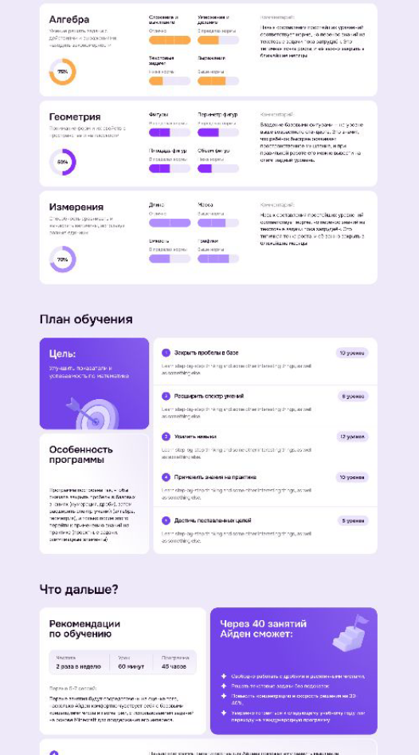
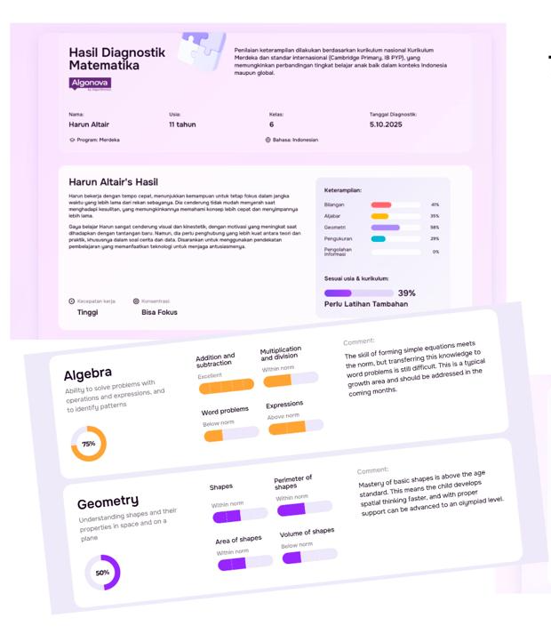
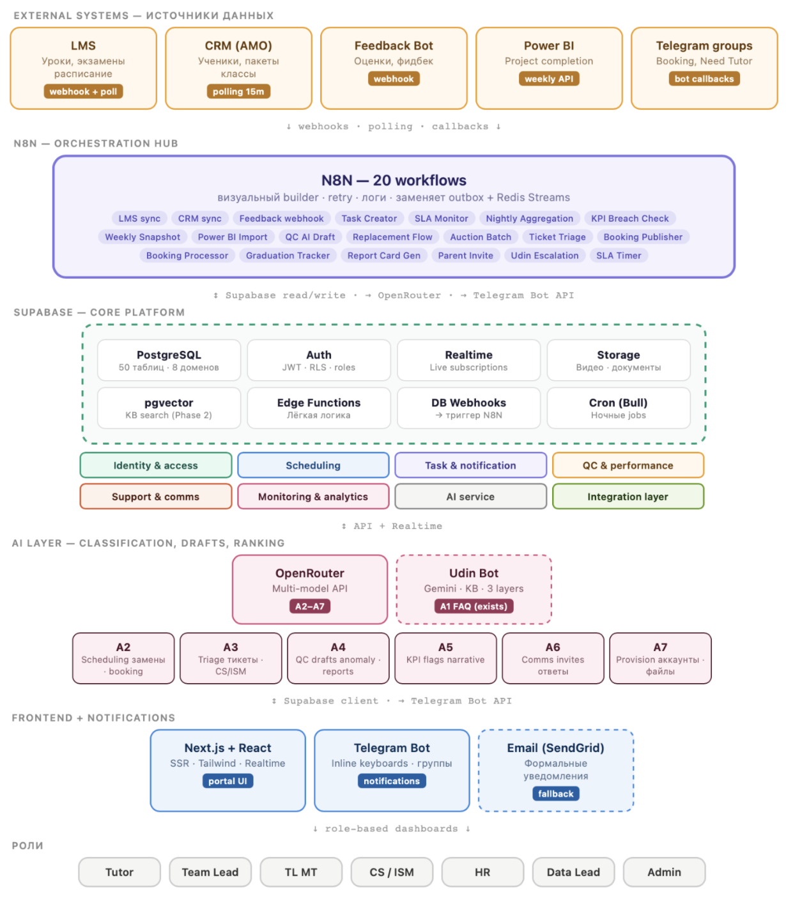

Как я превращаю сложные процессы
в работающие системы
Два кейса: рост продаж через данные и масштабирование операционных процессов без пропорционального роста штата.
Из разрозненных данных в инструмент продаж
Данные собранные в маркетинговых квизах и звонках, на встрече не использовались продавцом, но потенциально могли стать толчком к росту продаж
Собрал инструмент который объединял информацию о клиенте, сегментировал и выдавал продукт под конкретный профиль
Менеджер получает релевантный продукт и сценарий разговора ещё до ключевой встречи
Данные из CRM: в инструмент автоматически подтягивается вся доступная информация об ученике.
Результаты диагностики: после встречи система дополняет профиль глубокой оценкой навыков ребёнка.
Финансовая сила: продавцу остаётся подтвердить сегмент High / Middle / Low на основе диалога с клиентом.
На основе возраста ребёнка + целей + уровня навыков + финансовой силы семьи система автоматически формирует персональную веб-страницу — фактически готовый сценарий продажи, который включает:


То есть продавец получает не просто набор данных о клиенте, а готовое персонализированное предложение, учитывающее одновременно потребности ребёнка и возможности семьи.
Персонализированный подход вместо шаблонной продажи;
система увеличила число продаж более крупных пакетов благодаря механики сегментации, персонализации и выдачи подходящего продукта с длительностью обучения.
Продукт с подключённым инструментом стал одним из драйверов роста выручки, показывая более высокую динамику относительно остальных направлений.
Рост преподавателей без пропорционального роста менеджеров сопровождения и качества преподавателей
Вместо масштабирования ручной операционки — единая внутренняя система на автоматизации и регламентах.
Дальнейший найм менеджеров был остановлен
≈ $480K потенциальной экономии бизнеса в год
архитектурная система портала, которая позволяет улучшать операции и подключать следующие бизнес-функции без пересборки продукта.
Единая архитектура портала для 7 ролей
Спроектирована единая система, которая объединяет процессы 7 ролей и позволяет данным бесшовно переходить между ними.

Как работает система сигналов
Портал постоянно анализирует данные и коммуникации и автоматически подсвечивает сотрудникам точки, требующие внимания.
Сотруднику не нужно искать проблему — система сама определяет отклонение, подсвечивает его и инициирует следующий шаг.
Главное правило: не автоматизировать существующий хаос, а сначала понять и перепроектировать процесс - затем собрать решение, которое можно поддерживать и масштабировать.
Буду рад познакомиться лично
@saizonov